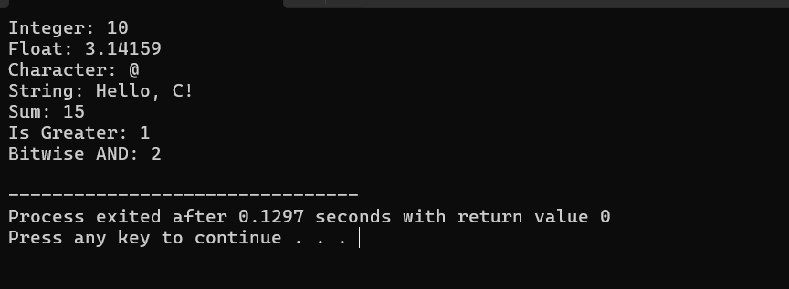
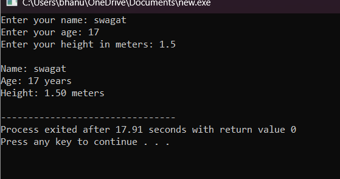
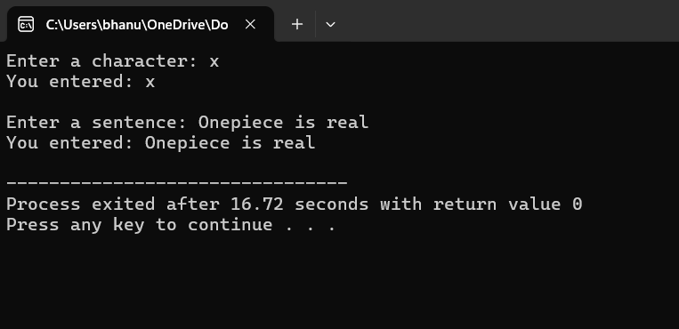
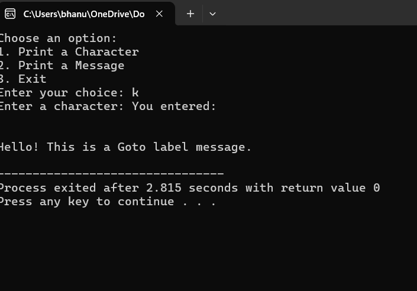
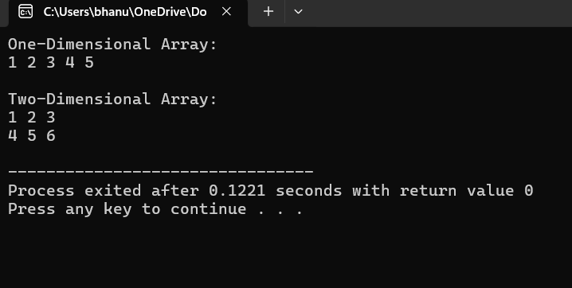
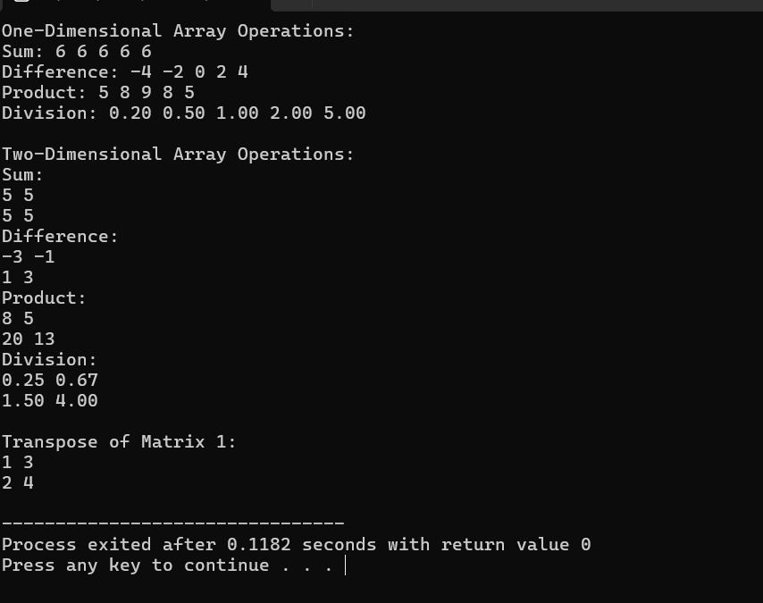
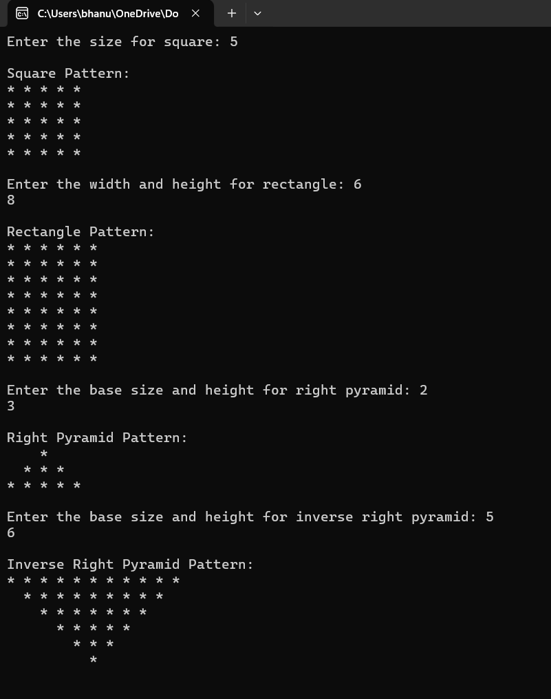
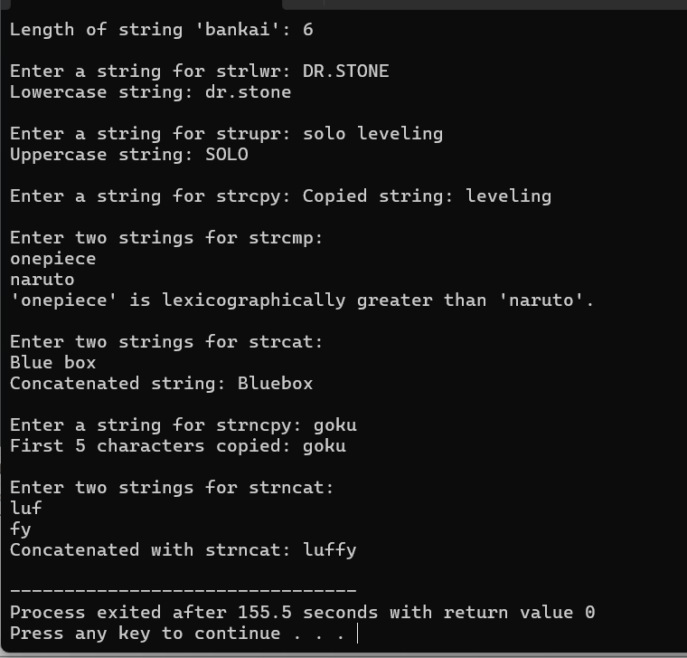

Simple C Code and Output
Q1. Different types of pre-processor directives (Macros, File Inclusion, Conditional Compilation,
Other directives)
C Code: Use of different types of pre-processor directives
#include <stdio.h>
#include // File Inclusion
#define PI 3.14159 // Macro
#define SQUARE(x) ((x) * (x)) // Macro with argument
// Conditional Compilation
#ifdef DEBUG
#define LOG(x) printf("DEBUG: %s\n", x)
#else
#define LOG(x) // No operation
#endif
#ifndef VALUE
#define VALUE 10 // Other directives (#ifndef and #define)
#endif
void showDirectivesUsage() {
LOG("Inside showDirectivesUsage function");
printf("PI value: %f\n", PI);
printf("Square of 5: %d\n", SQUARE(5));
printf("VALUE is defined as: %d\n", VALUE);
}
int main() {
LOG("Program started");
showDirectivesUsage();
LOG("Program ended");
return 0;
}
Output Image: Use of different types of pre-processor directives

Q2. Different types of tokens (keywords, identifiers, constants, strings, special symbols,
operators)
C Code: Use of different types of tokens
#include <stdio.h>
#include // File Inclusion
// Keywords and Identifiers
int main() {
int num = 10; // Identifier (num) and Constant (10)
float pi = 3.14159; // Identifier (pi) and Constant (3.14159)
char symbol = '@'; // Identifier (symbol) and Character Constant ('@')
// String Constant
char str[] = "Hello, C!";
// Special Symbols and Operators
printf("Integer: %d\n", num); // Special symbols: (), {}, ;
printf("Float: %.5f\n", pi);
printf("Character: %c\n", symbol);
printf("String: %s\n", str);
// Operators
int sum = num + 5; // '+' is an arithmetic operator
int isGreater = num > 5; // '>' is a relational operator
int bitwiseAnd = num & 2; // '&' is a bitwise operator
printf("Sum: %d\n", sum);
printf("Is Greater: %d\n", isGreater);
printf("Bitwise AND: %d\n", bitwiseAnd);
return 0;
}
Output Image: Use of different types of tokens

Q3. Different types of Input/Output Functions
(Formatted I/O Functions)
C Code: Types of Input/Output Functions
#include <stdio.h>
#include // File Inclusion
int main() {
// Formatted Input Functions
int age;
float height;
char name[50];
printf("Enter your name: ");
scanf("%s", name); // Formatted input
printf("Enter your age: ");
scanf("%d", &age); // Formatted input
printf("Enter your height in meters: ");
scanf("%f", &height); // Formatted input
// Formatted Output Functions
printf("\nName: %s\n", name);
printf("Age: %d years\n", age);
printf("Height: %.2f meters\n", height);
return 0;
}
Output Image: Types of Input/Output Functions

Q4. Unformatted I/O Functions
C Code: Unformatted I/O Functions
#include <stdio.h>
#include // File Inclusion
int main() {
// Unformatted Input/Output Functions
char ch;
char sentence[100];
printf("Enter a character: ");
ch = getchar(); // Unformatted input
printf("You entered: ");
putchar(ch); // Unformatted output
printf("\n");
printf("\nEnter a sentence: ");
getchar(); // Consume newline left by previous input
gets(sentence); // Unformatted input (unsafe, use fgets instead)
printf("You entered: ");
puts(sentence); // Unformatted output
return 0;
}
Output Image: Unformatted I/O Functions

Q5.switch case and goto label
C Code: switch case and goto label
#include <stdio.h>
#include // File Inclusion
int main() {
int choice;
char ch;
// Switch-Case Example
printf("Choose an option:\n");
printf("1. Print a Character\n2. Print a Message\n3. Exit\n");
printf("Enter your choice: ");
scanf("%d", &choice);
getchar(); // Consume newline left by scanf
switch (choice) {
case 1:
printf("Enter a character: ");
ch = getchar();
printf("You entered: ");
putchar(ch);
printf("\n");
break;
case 2:
goto message;
case 3:
printf("Exiting program.\n");
return 0;
default:
printf("Invalid choice!\n");
}
message:
printf("\nHello! This is a Goto label message.\n");
return 0;
}
Output Image: switch case and goto label

Q6. Different types of array
(One Dimensional Array, Two Dimensional Array)
C Code: Different types of array
#include <stdio.h>
#include // File Inclusion
int main() {
// One-Dimensional Array
int numbers[5] = {1, 2, 3, 4, 5};
printf("One-Dimensional Array:\n");
for (int i = 0; i < 5; i++) {
printf("%d ", numbers[i]);
}
printf("\n");
// Two-Dimensional Array
int matrix[2][3] = {{1, 2, 3}, {4, 5, 6}};
printf("\nTwo-Dimensional Array:\n");
for (int i = 0; i < 2; i++) {
for (int j = 0; j < 3; j++) {
printf("%d ", matrix[i][j]);
}
printf("\n");
}
return 0;
}
Output Image: Different types of array

Q7. Different Operation of Array
1D and 2D (+, -, *, /, transpose)
C Code: Different operations of array
#include <stdio.h>
#include // File Inclusion
int main() {
// One-Dimensional Array Operations
int numbers1[5] = {1, 2, 3, 4, 5};
int numbers2[5] = {5, 4, 3, 2, 1};
int sum[5], diff[5], product[5];
float division[5];
printf("One-Dimensional Array Operations:\n");
for (int i = 0; i < 5; i++) {
sum[i] = numbers1[i] + numbers2[i];
diff[i] = numbers1[i] - numbers2[i];
product[i] = numbers1[i] * numbers2[i];
division[i] = (float)numbers1[i] / numbers2[i];
}
printf("Sum: ");
for (int i = 0; i < 5; i++) printf("%d ", sum[i]);
printf("\nDifference: ");
for (int i = 0; i < 5; i++) printf("%d ", diff[i]);
printf("\nProduct: ");
for (int i = 0; i < 5; i++) printf("%d ", product[i]);
printf("\nDivision: ");
for (int i = 0; i < 5; i++) printf("%.2f ", division[i]);
printf("\n");
// Two-Dimensional Array Operations
int matrix1[2][2] = {{1, 2}, {3, 4}};
int matrix2[2][2] = {{4, 3}, {2, 1}};
int sum2D[2][2], diff2D[2][2], product2D[2][2] = {0};
float division2D[2][2];
printf("\nTwo-Dimensional Array Operations:\n");
for (int i = 0; i < 2; i++) {
for (int j = 0; j < 2; j++) {
sum2D[i][j] = matrix1[i][j] + matrix2[i][j];
diff2D[i][j] = matrix1[i][j] - matrix2[i][j];
division2D[i][j] = (float)matrix1[i][j] / matrix2[i][j];
for (int k = 0; k < 2; k++) {
product2D[i][j] += matrix1[i][k] * matrix2[k][j];
}
}
}
printf("Sum:\n");
for (int i = 0; i < 2; i++) {
for (int j = 0; j < 2; j++) printf("%d ", sum2D[i][j]);
printf("\n");
}
printf("Difference:\n");
for (int i = 0; i < 2; i++) {
for (int j = 0; j < 2; j++) printf("%d ", diff2D[i][j]);
printf("\n");
}
printf("Product:\n");
for (int i = 0; i < 2; i++) {
for (int j = 0; j < 2; j++) printf("%d ", product2D[i][j]);
printf("\n");
}
printf("Division:\n");
for (int i = 0; i < 2; i++) {
for (int j = 0; j < 2; j++) printf("%.2f ", division2D[i][j]);
printf("\n");
}
// Transpose of a Matrix
int transpose[2][2];
printf("\nTranspose of Matrix 1:\n");
for (int i = 0; i < 2; i++) {
for (int j = 0; j < 2; j++) {
transpose[j][i] = matrix1[i][j];
}
}
for (int i = 0; i < 2; i++) {
for (int j = 0; j < 2; j++) printf("%d ", transpose[i][j]);
printf("\n");
}
return 0;
}
Output Image: Different operations of array

Q8. Different Patterns (square, rectangle, right pyramid, inverse right pyramid)
C Code: Different types of patterns
#include <stdio.h>
#include
int main() {
int size, width, height;
// Square pattern
printf("Enter the size for square: ");
scanf("%d", &size);
printf("\nSquare Pattern:\n");
for (int i = 0; i < size; i++) {
for (int j = 0; j < size; j++) {
printf("* ");
}
printf("\n");
}
// Rectangle pattern
printf("\nEnter the width and height for rectangle: ");
scanf("%d %d", &width, &height);
printf("\nRectangle Pattern:\n");
for (int i = 0; i < height; i++) {
for (int j = 0; j < width; j++) {
printf("* ");
}
printf("\n");
}
// Right pyramid pattern
printf("\nEnter the base size and height for right pyramid: ");
scanf("%d %d", &size, &height);
printf("\nRight Pyramid Pattern:\n");
for (int i = 1; i <= height; i++) {
for (int j = 0; j < height - i; j++) {
printf(" ");
}
for (int j = 0; j < (2 * i - 1); j++) {
printf("* ");
}
printf("\n");
}
// Inverse right pyramid pattern
printf("\nEnter the base size and height for inverse right pyramid: ");
scanf("%d %d", &size, &height);
printf("\nInverse Right Pyramid Pattern:\n");
for (int i = height; i >= 1; i--) {
for (int j = 0; j < height - i; j++) {
printf(" ");
}
for (int j = 0; j < (2 * i - 1); j++) {
printf("* ");
}
printf("\n");
}
return 0;
}
Output Image: Different types of patterns

Q9. Different String Handling Functions (strlen(), strlwr(), strupr(), strcpy(), strcmp(), strcat(),
strcpncat() )
C Code: Different String Handling Functions
#include <stdio.h>
#include
#include
int main() {
char str1[50], str2[50], str3[50];
// Using strlen()
printf("Enter a string for strlen: ");
scanf("%s", str1);
printf("Length of string '%s': %lu\n", str1, strlen(str1));
// Using strlwr()
printf("\nEnter a string for strlwr: ");
scanf("%s", str1);
strlwr(str1); // Convert to lowercase
printf("Lowercase string: %s\n", str1);
// Using strupr()
printf("\nEnter a string for strupr: ");
scanf("%s", str1);
strupr(str1); // Convert to uppercase
printf("Uppercase string: %s\n", str1);
// Using strcpy()
printf("\nEnter a string for strcpy: ");
scanf("%s", str1);
strcpy(str2, str1); // Copy str1 into str2
printf("Copied string: %s\n", str2);
// Using strcmp()
printf("\nEnter two strings for strcmp:\n");
scanf("%s %s", str1, str2);
int result = strcmp(str1, str2); // Compare strings
if (result == 0) {
printf("Strings are equal.\n");
} else if (result < 0) {
printf("'%s' is lexicographically less than '%s'.\n", str1, str2);
} else {
printf("'%s' is lexicographically greater than '%s'.\n", str1, str2);
}
// Using strcat()
printf("\nEnter two strings for strcat:\n");
scanf("%s %s", str1, str2);
strcat(str1, str2); // Concatenate str2 to str1
printf("Concatenated string: %s\n", str1);
// Using strncpy()
printf("\nEnter a string for strncpy: ");
scanf("%s", str1);
strncpy(str2, str1, 5); // Copy first 5 characters of str1 into str2
str2[5] = '\0'; // Null-terminate the string
printf("First 5 characters copied: %s\n", str2);
// Using strncat()
printf("\nEnter two strings for strncat:\n");
scanf("%s %s", str1, str2);
strncat(str1, str2, 3); // Append first 3 characters of str2 to str1
printf("Concatenated with strncat: %s\n", str1);
return 0;
}
Output Image: Different String Handling Functions
